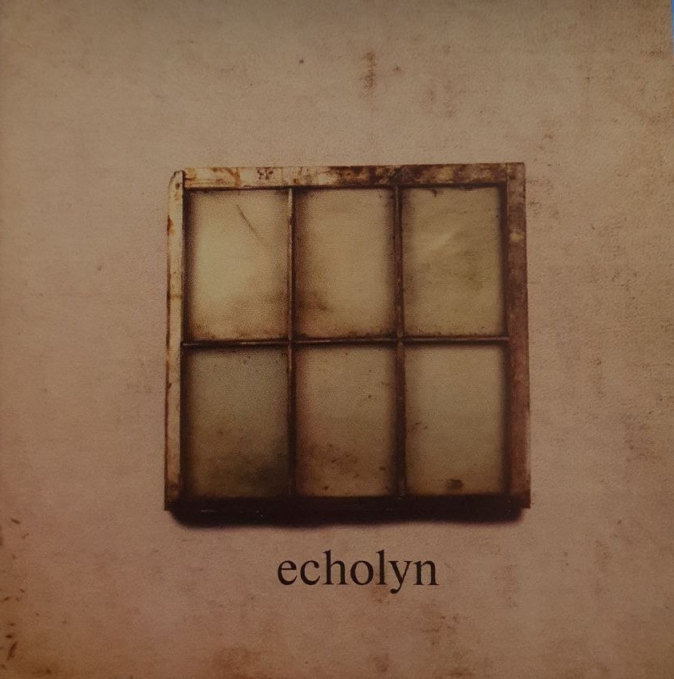

Коллекция Василевской Ирины Вячеславовны
Контактные данные
Коллекционер — это человек, собирающий редкости в надежде на то, что они станут еще более редкими.
Сигизмунд фон Радецки
| Исполнитель | Диск | Лэйбл | Стоимость | Изображение | Примечание |
|---|---|---|---|---|---|
| Jean-Luc Ponty | Individual choice | Atlantic 7 80098 - 2 |
7 USD |  |
1983, US, жанр Electronic, Jazz, Rock |
| Acatama experience | Koch KOC-CD-4233 |
16 USD |  |
2007,US, жанр Jazz | |
| Experience | One Way Records S21 17372 |
20 USD |  |
1993,US, жанр Jazz | |
| Storytelling | Columbia CK 45252 |
3,5 USD |  |
1989,US, жанр Electronic, Jazz, Rock | |
| Tchokola | Epic 468522 2 |
5,6 USD |  |
1991,Netherlands, жанр Jazz, Folk, World, & Country | |
| Asia | Phoenix | IROND CD 08-DD603 |
6,59 USD |  |
2008,Russia, жанр Rock, Pop |
| XXX | Frontiers Records FR CD 560 |
15 USD |  |
2012,Italy, жанр Rock | |
| John Fogerty | Revival | Fantasy 0888072300019 |
4 USD |  |
??? |
| The blue ridge rangers | Verve Forecast B001328602 |
3 USD |  |
??? | |
| Herbie Hancock | The Imagine Project | ? ? |
? USD |  |
2010,Russia, жанр Jazz, Folk, World, & Country |
| Foxy Shazam | The Church Of Rock And Roll | I.R.S. Records 509999 41160 2 1 |
7 USD |  |
2012,USA, жанр Rock |
| Kasabian | West Ryder Pauper Lunatic Asylum | Sony Music 8869 7518 312 |
2,24 USD |  |
2009,EU, жанр Electronic, Rock |
| Eagles Of Death Metal | Heart On | Downtown Music VVR886803 |
3,11 USD |  |
2008,Europe, жанр Rock |
| John Wetton | Raised In Captivity | Frontiers Records FR CD 522 |
? USD |  |
2011,Russia, жанр Rock |
| Buckcherry | All Night Long | Eleven Seven Music ESM 770 |
3,50 USD |  |
2010,US, жанр Rock |
| The Steve Miller Band | Let Your Hair Down | Space Cowboy Records RR 7718-5 |
? USD |  |
2011,Russia, жанр Rock, Blues |
| Bingo! | Loud & Proud Records 1686-177592 |
5,94 USD |  |
2010, US, жанр Rock, Blues | |
| Jack White | Blunderbuss | Third Man Records 88691 95993 2 |
2,96 USD |  |
2012, USA, жанр Rock, Blues |
| Mike Oldfield | Voyager | WEA 0630-15896-2 |
2,89 USD |  |
1996,Europe, жанр Electronic, Rock |
| Santana | All that i am | Arista OL 0507 |
2 USD |  |
2005, EU, жанр Rock, Latin |
| Abraxas / Amigos | ENIMS-BC BGCD 03014-3 |
10,99 USD |  |
1995, Russia, жанр Rock, Latin, Blues | |
| Shape Shifter | Starfaith 76692 99966 2 |
5,31 USD |  |
2012, Europe, жанр Rock, Latin | |
| Tom Petty And The Heartbreakers | Mojo | Reprise Records 523971-2 |
6 USD |  |
2010, US, жанр Rock |
| Chicago | The very best of Chicago | Arcade 9902295 |
1 USD |  |
1996, жанр Jazz, Rock, Pop |
| Fleetwood Mac | Heroes Are Hard To Find | Reprise Records 7599-27216-2 |
13,19 USD |  |
Europe, жанр Rock, Blues |
| Manfred Mann's Earth Band | Nightingales & Bombers | Petbrook ltd. MANN 008 |
12 USD |  |
1999, жанр Rock |
| Thin Lizzy | Black Rose (A Rock Legend) | Vertigo UICY-9236 |
1 USD |  |
2002, Russia, жанр Rock |
| Johnny The Fox | Vertigo UICY-9233 |
24,75 USD |  |
2002, Japan, жанр Rock | |
| Lynyrd Skynyrd | God & Guns | Roadrunner Records RR 7859-2 |
5,37 USD |  |
2009, Europe, жанр Rock |
| Last Of A Dyin' Breed | Roadrunner Records 1686 176442 |
4,88 USD |  |
2012, US, жанр Rock | |
| Paul McCartney | Flaming Pie | MPL 7243 8 57523 2 2 |
4,97 USD |  |
1997, Europe, жанр Rock, Pop |
| Doors | The Doors / Strange Days | CD-Maximum CDM 1199-375 |
1 USD |  |
2001, Russia, жанр Rock |
| Ringo | Ringo 2012 | Universal Music Group International 0602527918020 |
1 USD |  |
2012, Russia, жанр Rock |
| Ringo Rama Deluxe Edition | Koch Records KOC-CD-9533 (нет), KOC-CD-9533A, KOC-CD-9533B |
28,72 USD |  |
2003, US, жанр Rock, Non-Music, Pop | |
| Mick Jagger | Goddessinthedoorway | H Records 7243 8 11288 2 4 |
2,20 USD |  |
2001, Europe, жанр Rock |
| Procol Harum | Grand Hotel | Repertoire Records REP 4916 |
7,97 USD |  |
2000, Europe, жанр Rock |
| Shine on Brightly | Repertoire Records REP 4667-WY |
1 USD |  |
1997, Russia, жанр Rock | |
| The well's on fire | Eagle Records EAGCD209 |
6,06 USD |  |
2003, Germany, жанр Rock | |
| Uriah heep | Wake the sleeper | Sanctuary 1767027 |
11,67 USD |  |
2008, Europe, жанр Rock |
| John Norum | Play Yard Blues | Mascot Records M 7237 2 |
10,49 USD |  |
2010, Europe, жанр Rock |
| Supertramp | Some Things Never Change | EMI 489989 2 |
5,50 USD |  |
1997, Europe, жанр Rock |
| Breakfast In America | A&M Records 393 708-2 |
6,04 USD |  |
1989, Europe, жанр Rock | |
| Chris Thompson | Timeline | Voiceprint VP452CD |
12,75 USD |  |
2009, UK, жанр Rock, Pop |
| Pretenders | Break Up The Concrete | Shangri-La Music 101009 |
4 USD |  |
2008, US, жанр Rock |
| Slash | Slash | Roadrunner Records RR 7795-2 |
2,99 USD |  |
2010, Europe, жанр Rock |
| UFO | Seven Deadly | Steamhammer SPV 309250 CD Ltd. |
10 USD |  |
2012, Europe, жанр Rock |
| Golden Earring | Tits 'n Ass | Universal Music 370 234-0 |
8,46 USD |  |
2012, Europe, жанр Rock |
| Glenn Hughes | Return Of Crystal Karma | Steamhammer SPV 085-21812 DCD |
3,11 USD |  |
2000, Europe, жанр Rock |
| First Underground Nuclear Kitchen | Irond IROND CD 08-DD618 |
6,59 USD |  |
2008, Russia, жанр Rock, Funk / Soul | |
| David Coverdale / Whitesnake | North Winds / Come An' Get It | CD-Maximum CDM 0799-296 |
1 USD |  |
2001, Russia, жанр Rock |
| Creedence Clearwater Revival | Cosmo's Factory | Fantasy FAN-30880 |
5,48 USD |  |
2008, US, жанр Rock |
| Willy And The Poor Boys / Cosmo's Factory | CD-Maximum cdm 1199-371 |
1 USD |  |
2001, Russia, жанр Rock | |
| The Flock | Flock Rock - The Best Of The Flock | Gott Discs GOTTCD055 |
5 USD |  |
2006, UK, жанр Jazz, Rock |
| Jimi Hendrix | Valleys Of Neptune | Sony Music 88697640562 |
7 USD |  |
2010, жанр Rock, Blues |
| System Of A Down | Mezmerize | Columbia 5015349 |
1 USD |  |
2005, EU, жанр Rock |
| Eric Clapton | Clapton | Reprise Records 9362496359 |
3,30 USD |  |
2010, EU, жанр Rock, Blues |
| Atomic Rooster | Made In England | One Way Records OW 30644 |
10 USD |  |
1994, US, жанр Rock |
| Death walks behind you | ООО "ДОРА" JPCD9708517 |
1 USD |  |
1997, Russia, жанр Rock | |
| Chris Isaak | Beyond The Sun | Vanguard 78212-2 |
16,48 USD |  |
2011, US, жанр Rock |
| Madonna | MDNA | Interscope Records 0602527968155 |
4,61 USD |  |
Europe, жанр Electronic, Pop |
| Caravan | In The Land Of Grey And Pink | SomeWax Recordings SW339-2 |
1 USD |  |
2004, Russia, жанр Rock |
| Kiss | Monster | Simstan Music 0602537112050 |
6,53 USD |  |
2012, Europe, жанр Rock |
| Mountain | Climbing! | Columbia CK 86577 |
3,70 USD |  |
2003, US, жанр Rock |
| America | Homecoming | Warner Bros. Records 2655-2 |
7,12 USD |  |
1995, US, жанр Rock |
| Back Pages | eONE EOM-CD-2137 |
8 USD |  |
2011, US, жанр Rock,Pop | |
| Dave Matthews Band | Away From The World | RCA 88725-45257-2 |
2,99 USD |  |
2012, US, жанр Rock, Folk, World, & Country |
| Joe Lynn Turner | The Usual Suspects | Irond IROND CD 05-DD228 |
5,54 USD |  |
2005, Russia, жанр Rock |
| Black Country Communion | Afterglow | J&R Adventures PRAR935488 |
5,28 USD |  |
2012, US, жанр Rock |
| Muse | Futurism | Warner Bros. Records (2) 825646874677 |
1 USD |  |
2010, Russia, жанр Rock |
| Ray Davies | Working Man's Café | New West Records NW6136 |
4 USD |  |
2008, US, жанр Rock |
| P.J.Harvey | Uh Huh Her | OR3624 |
2 USD |  |
жанр Rock |
| Robbie Robertson | How To Become Clairvoyant | Macrobiotic Records FTN17821 |
3,89 USD |  |
2011, US, жанр Rock |
| Cake | Showroom Of Compassion | Upbeat Records none |
8,88 USD |  |
2011, US, жанр Rock |
| Krokus | Hoodoo | Sony Music 88697649432 |
5,56 USD |  |
2011, US, жанр Rock |
| Blackmore's Night | Fires At Midnight | Steamhammer SPV 088-72430 CDE |
1 USD |  |
2001, Russia, жанр Rock |
| Neil Young With Crazy Horse | Americana | Reprise Records 531195-2 |
3 USD |  |
2012, US, жанр Rock, Folk, World, & Country |
| Beardfish | Mammoth | Superball Music 0543-2 |
13,25 USD |  |
2011, Europe, жанр Rock |
| Hole | Nobody's Daughter | Mercury 602527370439 |
5,49 USD |  |
2010, Europe, жанр Rock |
| Ronnie Wood | I Feel Like Playing | Eagle Records EAGCD428 |
4,15 USD |  |
2010, Germany, жанр Rock |
| Yello | Touch Yello | Polydor 0602527194851 |
16,48 USD |  |
2009, Europe, жанр Electronic, Jazz |
| Dragonfly | Dragonfly | Gear Fab Records GF-208 |
8,75 USD |  |
2004, US, жанр Rock |
| Jade Warrior | Now | WindWeaver Music WWMCD001 |
18 USD |  |
2008, UK, жанр Rock |
| Warhorse | Warhorse | Angel Air Records SJPCD034 |
9,89 USD |  |
1999, UK, жанр Rock |
| The Wallflowers | Glad All Over | Columbia 88725 45690 2 |
5,48 USD |  |
2012, Europe, жанр Rock |
| Ray Manzarek / Roy Rogers | Translucent Blues | Blind Pig Records BPCD 5140 |
10,49 USD |  |
2011, US, жанр Blues, Jazz, Rock |
| The Cranberries | Roses | Cooking Vinyl COOKCD552 |
6,71 USD |  |
2012, US, жанр Rock |
| Ambrosia | Ambrosia | COE records |
2 USD |  |
2005, UK, жанр Rock |
| Ambrosia | Ambrosia | COE records |
2 USD | |
2005, UK, жанр Rock |
| Dire Straits | Love Over Gold | Vertigo 800 088-2 |
7 USD |  |
1996, UK, жанр Rock |
| Dire Straits | Warner Bros. Records 9 47769-2 |
4 USD |  |
US, жанр Rock | |
| Making Movies | Vertigo 800 050-2 |
3,56 USD | |
Europe, жанр Rock, Pop | |
| Them Crooked Vultures | Them Crooked Vultures | DGC B0013783-02 |
5 USD |  |
2009, US, жанр Rock |
| Dee Dee Bridgewater | Red Earth - A Malian Journey | DDB Records 0602517228290 |
3,85 USD |  |
2007, Europe, жанр Jazz, Folk, World, & Country |
| Redemption | The Origins Of Ruin | Inside Out Music SPV 79412 CD |
7,69 USD |  |
2007, Europe, жанр Rock |
| Morcheeba | The Antidote | Echo |
2,68 USD |  |
2005, Europe, жанр Electronic, Pop |
| Kayak | Coming Up For Air | SMH Recordings SMHR 2801 |
8,24 USD |  |
2008, Europe, жанр Rock |
| Scars On Broadway | Scars On Broadway | Interscope Records B0011592-02 |
4 USD |  |
2008, US, жанр Rock |
| Emerson, Lake & Palmer | Tarkus / Pictures At An Exhibition | Victory 828 465-2 |
1 USD |  |
2000, Europe, жанр Rock |
| 6.Bob Dylan | Modern Times | Columbia 82876 87606 2 |
2,34 USD |  |
2006, Europe, жанр Blues Rock, Folk Rock |
| 7.Procol Harum | Exotic Birds and Fruit | ООО"Дора" JPCD9705318 |
продан | |
1997, Russia-PIRAT, жанр Rock |
| 8.CAGE the Elephant | Thank you happy birthday | Jive 88697-81421-2 |
3 USD |  |
2011, US, жанр Rock |
| 9.U2 | All that you can't leave behind | Island records ENO0040 |
0,5 USD |  |
2000, Russia-PIRAT, жанр Rock |
| No Line On The Horizon | Island Records 1796028 |
3 USD |  |
2009, UK & Europe, жанр Rock, Pop | |
| 10.King Crimson | LIZARD | Virgin CDVKC3 |
7 USD |  |
2000, US, жанр Rock |
| 12. Arcade Fire | The Suburbs | Not on Label Z89847 7G MRG385-2 TEXT 01 |
1 USD | |
2010,Russia-PIRAT, жанр Rock |
| 13. HAND COOL+TEDDY BEAR | Meat Loaf | Mercury Records 2734097 06025 273 409-7 01*52526254 |
5 USD | |
2010, Europe, жанр Rock |
| 14.Flying Colors | Flying Colors | Music Theories Recordings MTR 7363 2 |
11 USD | |
2012,Europe, жанр Rock |
| 15.Van Halen | A Different Kind Of Truth | Interscope Records 0602527935270 |
11 USD |  |
2012,Europe,жанр Hard Rock |
| 16.Atomic Rooster | In Hearing of обложка чужая | Castle music CMQCD926 |
8 USD | |
2004,UK,жанр Rock |
| 17.Titanic | Ashes and Diamonds | Repertoire records Rep5147 |
1 USD | |
2009,Russia-PIRAT,жанр Rock |
| 18.Chickenfoot | III | eONE EOM-CD-2377 |
1 USD | |
2011,Russia-PIRAT,жанр Rock |
| 19.YES | Fly from Here | Avalon MIZP-30001 |
1 USD | |
2011,Russia-PIRAT,жанр Rock |
| 20.Santana | Guitar Heaven: The Greatest Guitar Classics Of All Time | Arista 88697-772072 матрица:54291182/88697772072-1 21 |
1 USD | |
2010,Russia-PIRAT,жанр Rock |
| 21. 3 Doors Down | The Better Life | Repubic 012 153 920-2 матрица:012 153 9202 08% BT |
1,5 USD | |
2000,US,жанр Rockстиль Alternative Rock, Pop Rock , |
| 22. U.K. | U.K.* | EG Records – EGCD 35 матрица:787541 @ 1 |
13 USD | |
1978,US,жанр Rock - стиль Prog Rock |
| 23. | USD |  |
|||
| Steppenwolf | At Your Birthday Party | MCA Records MCAD-1668 |
6 USD |  |
US, жанр Rock |
| Monster | MCA Records MCAD-31328 |
5 USD |  |
US, жанр Rock | |
| The second | MCA Records MCAD-31021 |
6,50 USD |  |
US, жанр Rock | |
| The Coral | Magic And Medicine | Deltasonic Records 512560 2 |
2,31 USD |  |
2003, UK & Europe, жанр Rock |
| MSG*, Schenker* - Barden* | In The Midst Of Beauty | in-akustik INAK 9085 CD |
6,59 USD |  |
2008, Germany, жанр Rock |
| HIM | Dark Light | sire |
3 USD |  |
Europe, жанр Rock |
| Status Quo | In Search Of The Fourth Chord | Edel Records 0184392ERE |
3,85 USD |  |
2007, Europe, жанр Rock |
| Robert Plant | Band Of Joy | Decca 2742241 |
4,40 USD |  |
2010, Europe, жанр Rock, Folk, World, & Country |
| The Alan Parsons Project | I Robot | РБСЗС ARCD 8040 |
1 USD |  |
1995, Russia, жанр Rock |
| Wishbone Ash | Pilgrimage _ Locked In | Not On Label (Wishbone Ash) WASHCOLCD 71752 |
1 USD |  |
2000, Russia, жанр Rock |
| Wishbone Ash _ There's The Rub | Not On Label (Wishbone Ash) WASHCOLCD 70741 |
1 USD |  |
2000, Russia, жанр Rock | |
| Grand Funk Railroad | Closer To Home _ E Pluribus Funk | Not On Label (Grand Funk Railroad) GRCD 004 |
1 USD |  |
Russia, жанр Rock |
| The Dead Weather | Horehound | Third Man Records 2-519785 |
2,20 USD |  |
2009, USA, жанр Rock |
| Sea Of Cowards | Third Man Records 2-524033 |
6,57 USD |  |
2010, US, жанр Rock | |
| Within Temptation | The Unforgiving | Sony Music 88697635892 |
6,02 USD |  |
2011, Europe, жанр Rock |
| Porcupine Tree | The Incident | Roadrunner Records RR 7857-2 |
15,14 USD |  |
2009, UK & Europe, жанр Rock (должно быть 2 диска, в коробочке 1) |
| Steven Wilson | The Raven That Refused To Sing (And Other Stories) | Kscope KSCOPE242 |
7,50 USD |  |
2013, Europe, жанр Rock |
| Stone Gods | Silver Spoons & Broken Bones | PIAS UK SG004 |
8,74 USD |  |
2008, EK, жанр Rock |
| George Thorogood And The Destroyers | The Dirty Dozen | Capitol Records 509996 84082 20 |
5,79 USD |  |
2009, US, жанр Rock, Blues |
| Sammy Hagar | Cosmic Universal Fashion | Roadrunner Records RR 7891-2 |
4,95 USD |  |
2008, Europe, жанр Rock |
| Halford | Halford IV - Made Of Metal | Metal God Records MGE8077192 |
13,18 USD | |
2010, US, жанр Rock |
| William Orbit | Hello Waveforms | Not On Label LDR 3580 WI-OR 060305 |
1 USD |  |
2006, Russia, жанр Electronic |
| Belle Epoque | Now | CD-Maximum CDM 0602-1023 |
1 USD |  |
2002, Russia, жанр Electronic |
| GPS | Window To The Soul | Inside Out Music SPV 48852 CD |
5,43 USD |  |
2006, Germany, жанр Rock |
| Stone Temple Pilots | Stone Temple Pilots | Atlantic 519419-2 |
7 USD |  |
2010, US, жанр Rock |
| Rush | Clockwork Angels | Roadrunner Records |
5 USD |  |
2012, US, жанр Rock |
| Peter Frampton | Thank You Mr Churchill | New Door Records B0014000-02 |
4,25 USD |  |
2010, US, жанр Rock, Pop |
| Yes | Fragile _ Close To The Edge | SomeWax Recordings SW125-2 |
1 USD |  |
Russia, жанр Rock |
| Make Some Noise | The Amnesty International Campaign To Save Darfur | Warner Bros. Records 9362-49963-0 |
4,94 USD |  |
2007, Europe, жанр Electronic, Hip Hop, Rock, Reggae, Latin, Funk / Soul, Pop (2 x CD, Compilation, Digisleeve) |
| Victor Wooten | Palmystery | Heads Up International HUCD 3135 |
6,30 USD |  |
2008, US, жанр Jazz |
| Black Stone Cherry | Folklore And Superstition | Roadrunner Records RR 7940-2 |
3,29 USD |  |
2008, US, жанр Rock |
| Ursa Majory | Ursa Major | BMG Special Products DRC1 2465 |
12 USD |  |
2000, US, жанр Rock |
| Foo Fighters | Echoes, Silence, Patience & Grace | RCA 88697 11516 2 |
3,29 USD |  |
2007, Europe, жанр Rock |
| John McLaughlin And The 4th Dimension | To The One | Mediastarz Monaco ABLX 027 |
7,69 USD |  |
2010, US, жанр Jazz, Rock |
| Sade | Soldier Of Love | Sony Music 88697639332 |
1,84 USD |  |
2010, EU, жанр Funk / Soul |
| Arcturus | Sideshow Symphonies | CD-Maximum CDM 0905-2390 |
4,40 USD |  |
2006, Russia, жанр Rock |
| Molly Hatchet | Justice | Steamhammer SPV 308232 CD |
10,99 USD |  |
2010, Germany, жанр Rock |
| Людмила | Ночной Альбом | Not On Label none |
1 USD | |
2002, Russia, жанр Rock |
| Бутырка | Лучшие песни | Not On Label none |
1 USD |  |
Russia, жанр ??? |
| Led Zeppeling | Led Zeppeling 3 и 4 | Not On Label none |
1 USD |  |
Russia, жанр Rock (самодельный) |
| Willie Nelson & Asleep At The Wheel | Willie And The Wheel | Bismeaux Records BR1287D |
12 USD |  |
2009, US, жанр Folk, World, & Country |
| Ian Gillan | One Eye To Morocco | Edel 0195472ERE |
5 USD |  |
2009, Germany, жанр Rock |
| James Carter | Present Tense | EmArcy B0010985-02 |
4,25 USD |  |
2008, US, жанр Jazz |
| James Carter | Present Tense | EmArcy B0010985-02 |
4,25 USD | |
2008, US, жанр Jazz |
| California Guitar Trio | Echoes | Inner Knot INK7716 |
1 USD |  |
2008, жанр Folk, World, & Country |
| echolyn | echolyn | Not On Label (Echolyn Self-released) none |
16,67 USD |  |
2012, US, жанр Rock |
| Al Di Meola | Orange And Blue | Bluemoon R2 79197 |
4,75 USD |  |
1994, US, жанр Jazz |
| Al Di Meola | Orange And Blue | Bluemoon R2 79197 |
4,75 USD | |
1994, US, жанр Jazz |
| Bob Seger | Face The Promise | Capitol Records CDP 0946 3 54506 2 0 |
3,25 USD |  |
2006, US, жанр Rock |
| Candy Dulfer | Candy Store | Heads Up International HUCD3131 |
5,27 USD | |
2007, US, жанр Jazz, Latin, Funk _ Soul |
| The Answer | Rise | Albert Productions JASCDUK045P |
6,24 USD |  |
2007, UK, жанр Rock, Blues |
| Velvet Revolver | Libertad | RCA 82876 88859-2 |
6,99 USD |  |
2007, US, жанр Rock |
| Garbage | Not Your Kind Of People | Stun Volume STNVOL-010 |
5,90 USD |  |
2012, Europe, жанр Rock |
| Robby Krieger | Singularity | Oglio Records OGL89160-2 |
9,89 USD |  |
2010, US, жанр Jazz, Rock |
| Scorpions | Pure Instinct | EastWest 0630-14524-2 |
6,47 USD |  |
1996, Germany, жанр Rock |
| Deep purple | Rapture of the Deep | Eagle Records CD-362-48570-20 |
1 USD |  |
2005, Russia, жанр Rock |
| Burn | Purple Records CDP 7 92611 2 |
13,27 USD |  |
1974, UK, жанр Rock | |
| Machine Head | Not On Label (Deep Purple) CD 043 |
1 USD |  |
Russia, жанр Rock | |
| Machine Head (2cd) | EMI 7243 8 59506 2 9 |
10,44 USD | .jpg) |
1997, UK, жанр Rock | |
| Bananas | EMI 7243 5 91048 2 9 |
12,50 USD |  |
2003, UK, жанр Rock | |
| Stormbringer | EMI CDP 7 91084 2 |
22,22 USD |  |
1995, UK, жанр Rock | |
| Purpendicular | 5,55 USD |  |
1996, Europe, жанр Rock |
| Исполнитель | Пластинка | Стоимость | Изображение |
|---|---|---|---|
| Jan Luk Ponti | пластинка 1" | 10,45 руб |  |
| пластинка 2 | 11,47 руб | |
|
| Elton Jon | пластинка 3 | 20,50 руб | |
| диск "наименование 4" | 11,47 руб | |